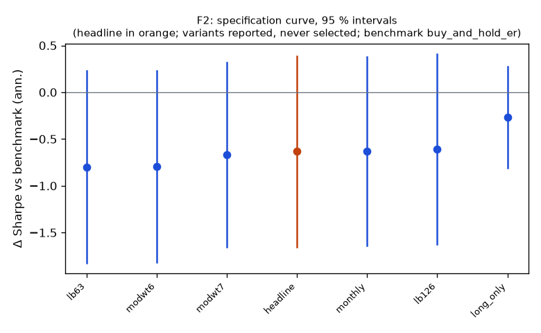

**Mechanism.** Slow information diffusion, under-reaction and herding create 1–12 month return continuation within asset classes; vol-scaling equalizes risk across assets (Moskowitz, Ooi & Pedersen 2012; Hurst, Ooi & Pedersen 2017).

| variant | status | start | days | sharpe | Δ vs bench | CI | p | Δ on headline days | net ret | max dd | floors |
|---|---|---|---|---|---|---|---|---|---|---|---|
| headline | ok | 2017-01-06 | 2195 | 0.23 | -0.63 | -1.65 … 0.38 | 0.2079 | — | 1.3 % | -14.3 % | no |
| lb63 | ok | 2016-04-08 | 2384 | 0.11 | -0.80 | -1.83 … 0.23 | 0.1204 | -0.78 | 0.5 % | -18.4 % | no |
| lb126 | ok | 2016-07-08 | 2321 | 0.23 | -0.61 | -1.62 … 0.41 | 0.2329 | -0.59 | 1.4 % | -15.5 % | no |
| modwt6 | ok | 2016-04-08 | 2384 | 0.11 | -0.79 | -1.82 … 0.23 | 0.1214 | -0.79 | 0.5 % | -17.4 % | no |
| modwt7 | ok | 2016-07-08 | 2321 | 0.17 | -0.67 | -1.66 … 0.32 | 0.1754 | -0.65 | 0.9 % | -16.2 % | no |
| long_only | ok | 2017-01-06 | 2195 | 0.60 | -0.27 | -0.81 … 0.27 | 0.3203 | -0.27 | 4.7 % | -15.5 % | yes |
| monthly | ok | 2017-01-31 | 2179 | 0.24 | -0.63 | -1.64 … 0.37 | 0.2154 | -0.63 | 1.4 % | -15.2 % | no |
Coherence reads each variant's Δ on the days it shares with the headline (column 'Δ on headline days'); the curve and the p-values are each variant's own sample.
| variant | crisis_return | exposure | max_dd | ret_ann | sharpe | skew | vol_ann |
|---|---|---|---|---|---|---|---|
| headline | 2020-02-19..2020-03-24: -3.0 %; 2022-01-03..2022-10-13: 10.9 % | 0.999 | -0.143 | 0.013 | 0.228 | -0.840 | 0.066 |
| lb63 | 2020-02-19..2020-03-24: 2.7 %; 2022-01-03..2022-10-13: 2.7 % | 0.999 | -0.184 | 0.005 | 0.106 | -0.470 | 0.071 |
| lb126 | 2020-02-19..2020-03-24: -3.7 %; 2022-01-03..2022-10-13: 15.1 % | 0.999 | -0.155 | 0.014 | 0.234 | -0.839 | 0.070 |
| modwt6 | 2020-02-19..2020-03-24: 2.7 %; 2022-01-03..2022-10-13: 5.7 % | 0.999 | -0.174 | 0.005 | 0.110 | -0.392 | 0.071 |
| modwt7 | 2020-02-19..2020-03-24: -4.4 %; 2022-01-03..2022-10-13: 13.5 % | 0.999 | -0.162 | 0.009 | 0.170 | -0.902 | 0.070 |
| long_only | 2020-02-19..2020-03-24: -11.1 %; 2022-01-03..2022-10-13: -5.4 % | 0.999 | -0.155 | 0.047 | 0.595 | -0.896 | 0.083 |
| monthly | 2020-02-19..2020-03-24: -4.7 %; 2022-01-03..2022-10-13: 12.9 % | 0.990 | -0.152 | 0.014 | 0.237 | -0.556 | 0.066 |
**vix_tercile**
| group | n_days | mean_bp | ci_bp | sharpe |
|---|---|---|---|---|
| high | 732 | -1.08 | -5.16 … 3.00 | -0.30 |
| low | 730 | 1.65 | -0.26 … 3.56 | 0.96 |
| mid | 733 | 1.22 | -1.31 … 3.74 | 0.56 |
**macro_day**
| group | n_days | mean_bp | ci_bp | sharpe |
|---|---|---|---|---|
| macro | 270 | -0.03 | -5.91 … 5.86 | -0.01 |
| other | 1925 | 0.68 | -1.07 … 2.44 | 0.27 |
| split | n_days | sharpe | bench_sharpe | ret | max_dd | mean_bp |
|---|---|---|---|---|---|---|
| 2017_2019 | 751 | 0.27 | 1.45 | 3.4 % | -13.5 % | 0.49 |
| 2020_2025 | 1444 | 0.22 | 0.75 | 8.2 % | -14.3 % | 0.65 |
| equity_only | 2195 | 0.10 | 0.66 | 3.9 % | -36.8 % | 0.53 |
*quasi-holdout 2025-10-01 → 2026-09-30: contaminated (the U11 holdout exposed these days' buy-and-hold outcomes before the families were chosen); a robustness slice, never a gate*
| slice | n_days | sharpe | bench_sharpe | ret | max_dd | mean_bp |
|---|---|---|---|---|---|---|
| 2025-10 → 2026-09 | 250 | 1.48 | 1.43 | 10.4 % | -3.8 % | 4.04 |
+registered: {sha: 'e19b44f22d84e998031544bf49c375b348964d1b', date: '2026-10-10'}